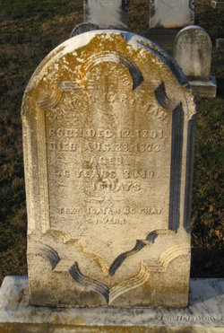
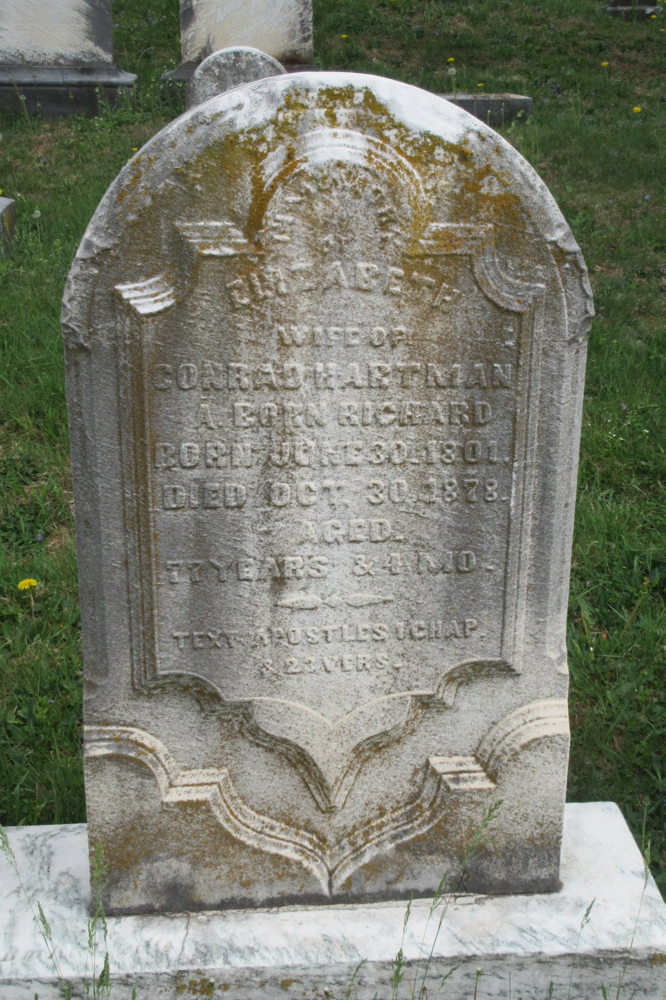

Conrad and Elizabeth HARTMAN
GREAT-GREAT-GRANDPARENTS of Titus HARTMAN (PxPxP)
Conrad and Elizabeth HARTMAN
married 1823
Conrad HARTMAN
born 12 Dec 1801
died 28 Aug 1878
Elizabeth RICHARD
born 30 Jun 1801
died 30 Oct 1878
Children of Conrad HARTMAN and Elizabeth RICHARD
Daniel R. HARTMAN
born 18 Mar 1824
died 15 Dec 1895
Anna HARTMAN
born 28 Oct 1825
died 27 Jul 1895 at age 69
William HARTMAN
born 1827
died 1907
George R. (or B.) HARTMAN
born 02 Jan 1831
died 24 Aug 1910
David R. HARTMAN
born 15 Feb 1832
died 11 May 1915
Amos R. HARTMAN
born 13 Jun 1835
died 15 Jun 1907 at age 72
Deborah R. HARTMAN
born 15 Jul 1839
died 31 Mar 1901
Jacob R. HARTMAN
born 30 Apr 1841
died 15 Dec 1922 at age 81
[gray boxes above indicate that the person is buried at Fairview Cemetery in Boyertown, PA]
Conrad and Elizabeth are buried together at Fairview Cemetery in Boyertown, PA.

